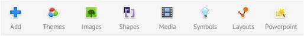
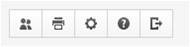
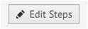

Interaktiv prezentaciya-bul kompyuter hám adam ortasındaǵı baylanıs bolıp, bunda adamǵa kerek bolǵanda ózi ushın informaciyanı ǵáressiz izlew hám tabıw imkaniyatı beriledi. Barlıq interaktiv avtorlıq hám prezentaciyaliq dástúrler biz ulıwma qásiyetke iye bolıp:olar waqiyalar menen basqarıladı
1-TEMA
INTERAKTIV PREZENTACIYALAR HÁM OLARDI TAYARLAW.
(Prezi programmasında)
PowerPoint usılındaǵı standart prezentaciyalar ornına Prezi xızmeti pútkil prezentaciyanı óz ishine alǵan bir úlken slaydtı jaratadı. Bul úlken slaydtıń hár bir elementi kóbeyiwi yamasa bólek azayıwı múmkin. Bul jantasıw menen slaydlar menen jumıs islew dinamikalıq processge aylanadı, bul úsh ólshemli ortalıqta ámelge asırıladı.
- Bunı ámelge asırıw ushın siz ekrannıń joqarı oń múyeshindegi Sign up kishi jazıwdı tabıwıńız kerek.
- Jańa ayna ashadı, ol jaǵdayda siz Prezi programmasınıń jumıs ushın versiyasın tańlawıńız kerek. Free -di saylań demek biypul, alıw GET -ti basıń
- Berilgen formasın toltırıń.First name - at
- Last name - famılıya
- Xat sizdiń elektron pochta adresinizge keledi. Elektron pochta xabarındaǵı siltemenı basıw arqalı dizimnen ótiw procesin orınlań. Eger siz hesh zat almaǵan bolsańız, ótinish, spamlı papkańızdı tekseriń.
Email - sizdiń elektron pochta adresińiz, sonıń menen birge, keleshekte kiriw ushın login boladı Password - parol (elektron qutidan alıw jaqsılaw ) Password again - paroldı tákirarlań I agree to be bound by the terms of this Terms of Service. - bul punktı belgileń hám Register tuymesin basıń.
Dizimnen ótkennen keyin, prezentaciyanı jaratıwdı baslawıńız múmkin.
- Jeke kabinetińizde « New prezi» siltemesinı basıń.
- Payda bolǵan aynadaǵı eki maydandı toltırıń :
- Title - prezentaciya atı.
- Description - prezentaciyanıń tariypleniwi. Bul annotaciyanı toltırıń : bul basqa paydalanıwshılarǵa prezentaciyaıńız neni ańlatıwın túsiniwge járdem beredi (1-súwret).
1.1-súwret. Prezentaciyanıń tariypleniw aynası
Maydanlardı toltırǵannan keyin, " New prezi " tuymesin basıń.
1. Prezentaciyanı «Taza betten» jaratıń yamasa tayın shablonnan paydalanıń (2-súwret). Birinshi ret - aldınan ornatılǵan shablondı tańlaw jaqsılaw, sebebi onda aldınnan bir neshe slaydlar bar, olarda ótiw hám úlkeytiw málim elementleri qosıladı.
1.2-súwret. Rrezentaciya túrin tańlaw aynası
«Start editing» túymesine basıń. («Redaktrlawdı baslaw»). Keyingi basqıshda biz prezentaciya interfeysi menen tanısamız. 2012 jıl oktyabr ayınan baslap jańa Prezi veb-interfeysi payda boldı. Bul qolay hám ápiwayı. Redaktordıń barlıq tiykarǵı elementleri joqarı panelge kiritilgen hám piktogramm menen suwretlengen (3-súwret).
1.3-súwret. Prezentaciya ásbaplar paneli
1. Joqarı shep menyu ásbapları panelin kórip shıǵıń (4-súwret).
1.4-súwret Joqarı shep menyu ásbaplar táriypi
- Shepten ońǵa qaray :
- Show - prezentaciyanıń kórgezbesi;
- jańa prezentaciyanı jaratıw ;
- prezentaciya daǵı ózgerislerdi saqlaw
- Sońǵı háreketti bıykarlaw / tákirarlaw.
2. Joqarı oraylıq menyu (5-súwret).
1.5-súwret. Joqarı oraylıq menyu asbaplarınıń táriypi
- Add - jańa maydan qosıw (slayd );
- Themes - Prezentaciya shablonın tańlaw
- Images – prezentaciyaǵa suwretlerdi jaylastırıw;
- Shapes - tayın elementlerdi jaylastırıw (oq, markerler, geometriyalıq figuralar hám basqa ob'ektlerdi kirgiziw).
- Media - prezentaciyaǵa videonı qosıw ;
- Symbols - belgiler (bayraqlar, juldızlar hám basqalar );
- Layouts - slaydlar boylap háreketleniw ushın tayar sxemalardı qosıw ;
- Power Point - slaydlardı Microsoft Power Point-de tayarlanǵan prezentaciyalardan qoyıw.
3. Joqarı oń menyu (6 -súwret).
1.6-súwret. Joqarı oń menyudıń asbaplarınıń táriypi
- Shepten ońǵa qaray:
- prezentaciyaǵa birgeliktegi ruxsattı támiyinlew;
- Keyinirek basıp shıǵarıw ushın prezentaciyanı pdf formatında saqlaw ;
- Túrli monıtorlar prezentaciyanı kórsetiwdi sazlaw (16 : 9 – úlken formatlı monıtor );
- anglichan tilinde maǵlıwmatnama ;
- Prezentaciyanı redaktorlaw rejiminen saqlaw hám shıǵıw.
4. traektoriyalar menyusı (7-súwret).
1.7-súwret. Traektoriyalar menyusı
Traektorator menyusı programması interfeysi boyınsha ol " Edit Steps " tuymesine qóyıladı (prezentaciya kartasında shep tárepte jaylasqan ).
Bul menyu sizge slayd boylap háreketleniw jolın sazlaydı, kerekli izbe-izlikte kadrlar/ slaydlardı birlestiredi, slaydttıń kerekli maydanlarında toqtap qalıw hám úlkeytiw múmkinshiligin beredi. Sonday etip, hár qıylı prezentaciyalar túrli jollar menen alındı.
Soraw hám tapsırmalar
1. Interaktiv prezentaciya-bul
2. Title bul qanday xızmetti atqaradı
3. Description bul qanday xızmetti atqaradı
4. « New prezi » tuymesiniń atqaratuǵun xızmeti
5. «Start editing» túymesiniń xızmeti
6. Óz betinshe temada Prezi programmasında prezentaciya dúziń